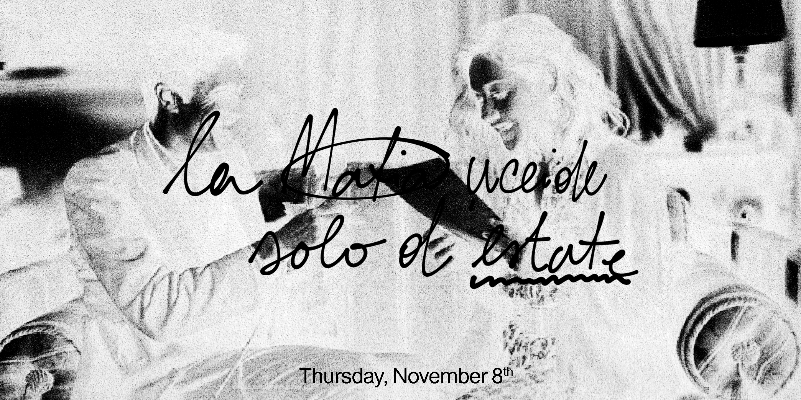
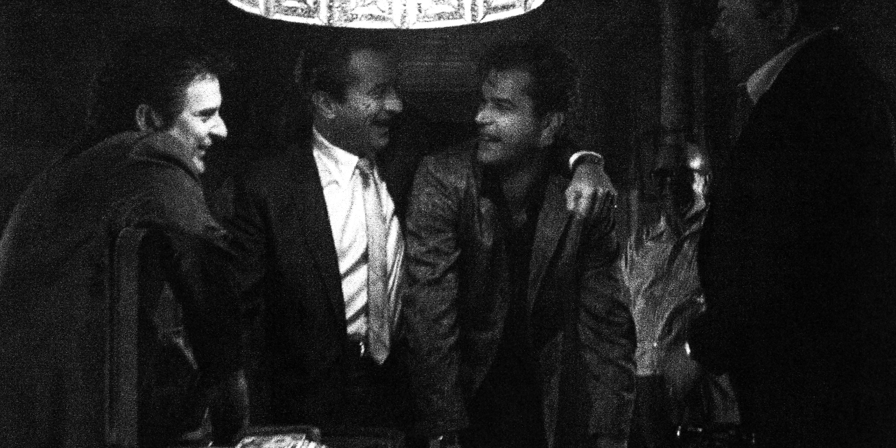
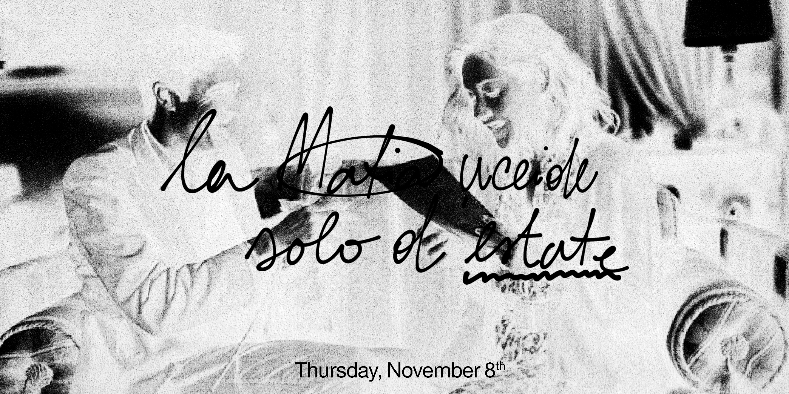
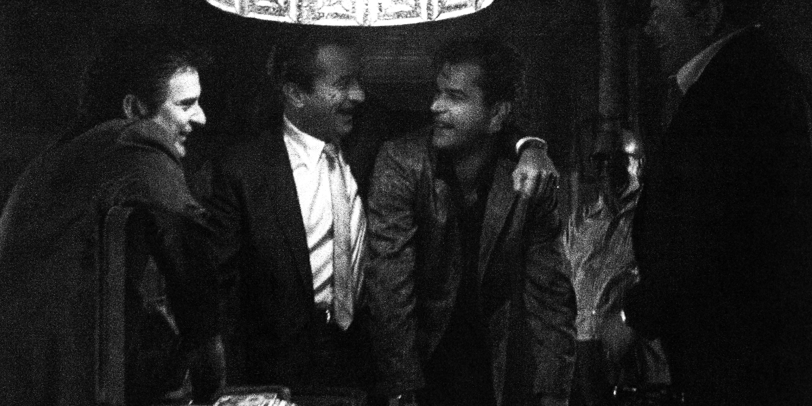
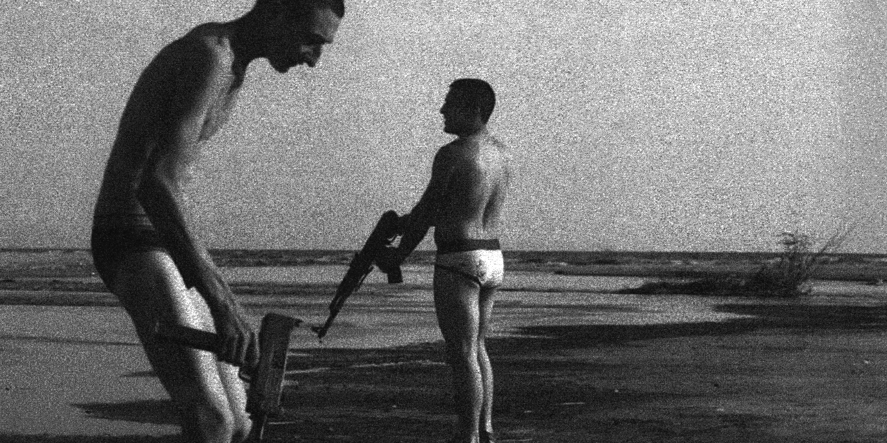
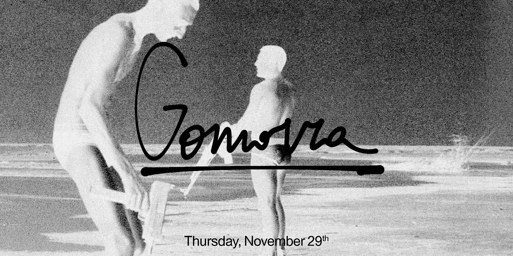
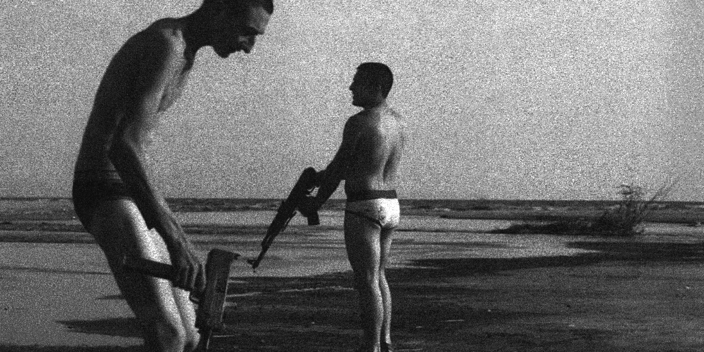
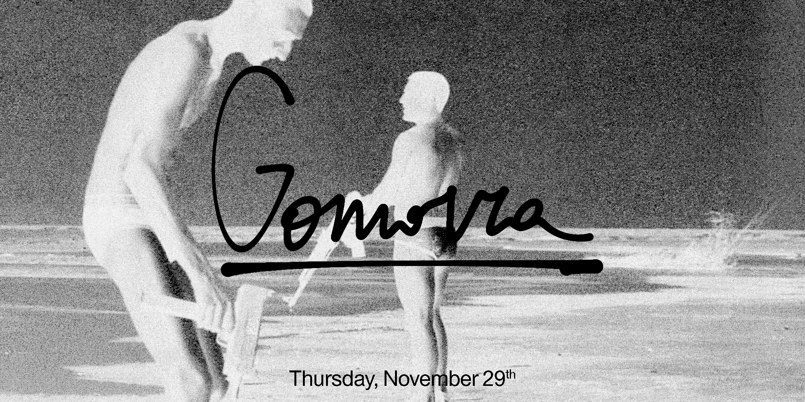

 



In the past, the Church reviewed every film that was to be shown at the most important festival like Venice and Cannes. A group of people, usually composed of five nuns and three priets, would charged with censoring a film if it did not meet ethical standards. They created a cinecircolo, a place where the film could be screened and discussed. Sometimes also the director of the movie was hosted as a guest. Every Thursday in November, the Atrium (1156 Chapel St) will be transformed to host a cinecircolo with the subject of the Mafia. The screening will start at 8.30pm followed by a discussion/conversation. Guest speakers will be invited from the Film and Media Study department and from the Yale Law School to help moderate the conversation.